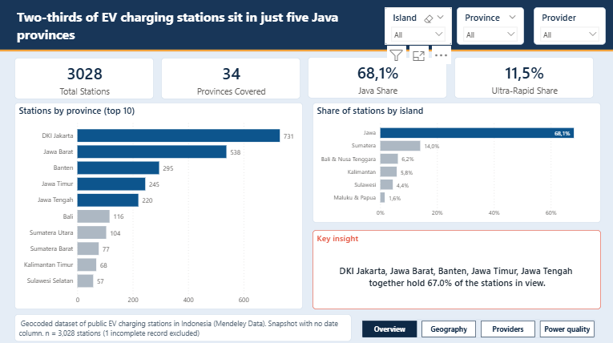
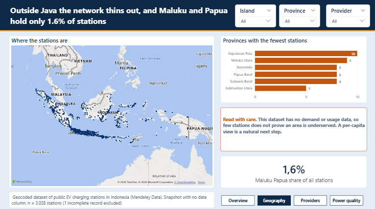
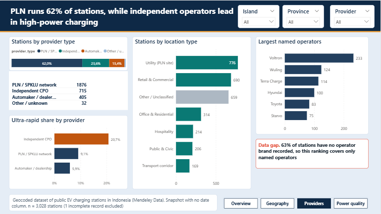
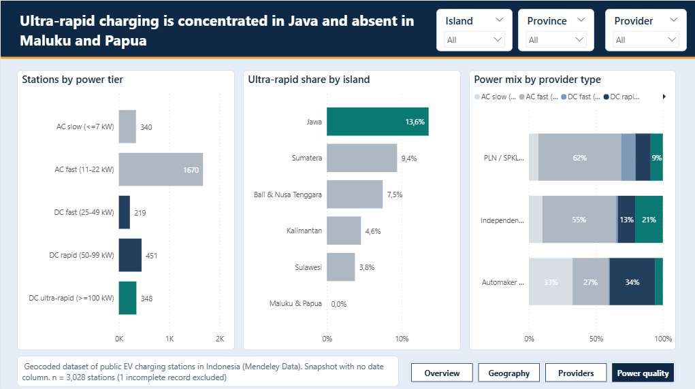

A pattern and opportunity analysis of 3,028 public charging stations, built as a 4-page Power BI dashboard with a short written report.
EV adoption depends on where people can charge. For a business development team, the useful question is not how many chargers exist, but who operates them, where they sit, and how fast they charge. The dashboard answers three questions: where the stations are and how concentrated the network is, who runs them and in which kinds of locations, and how much of the network offers high-power charging.
This is the live Power BI report. Filter by island, province or provider and watch every chart update.
Use the slicers and the page buttons inside the dashboard. On a phone it is easier to open it in a new tab.




| Provider type | Stations | Share of stations | Ultra-rapid share |
|---|---|---|---|
| PLN / SPKLU network | 1,876 | 62.0% | 9.1% |
| Independent operators | 715 | 23.6% | 20.7% |
| Automaker or dealership | 405 | 13.4% | 5.9% |
| Other or unknown | 32 | 1.1% | 15.6% |
These are hypotheses for a business development team to test, not conclusions. The data shows where stations are, not where drivers need them.